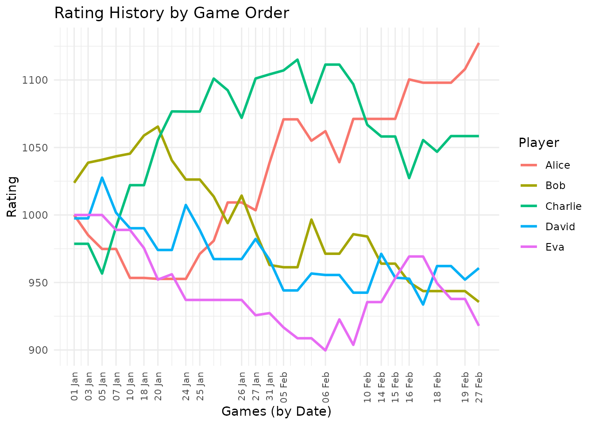

Introduction to eloextend
introduction.RmdOverview
The eloextend package extends the classic Elo rating system to handle multiplayer games with 3 or more players. Here, we demonstrate the key functionality - allowing you to calculate a rating system for your own multiplayer games.
Generating Sample Data
You’ll bring your own data, but for the purposes of demonstration
let’s make up some example data using generate_toy_data().
We’ll simulate 30 games over a 2-month period with 5 players. Key
features are the inclusion of a game_id (so that we know the order games
were played in, if more than once game was played on the same date). As
you can see, not all players participated in all games.
set.seed(42)
start_date <- as.Date("2024-01-01")
end_date <- as.Date("2024-02-29")
players <- c("Alice", "Bob", "Charlie", "David", "Eva")
game_data <- generate_toy_data(
start_date = start_date,
end_date = end_date,
players = players,
n_games = 30
)
# View first few games
head(game_data)
#> game_id date Alice Bob Charlie David Eva
#> 1 1 2024-01-01 NA 1 3 2 NA
#> 2 2 2024-01-03 2 1 NA NA NA
#> 3 3 2024-01-05 3 2 4 1 NA
#> 4 4 2024-01-07 NA 2 1 4 3
#> 5 5 2024-01-10 4 2 1 3 NA
#> 6 6 2024-01-18 NA 1 NA NA 2Calculating Ratings, starting from nothing
The convenience function calculate_all_ratings()
processes an entire history of games:
ratings <- calculate_all_ratings(
data = game_data,
initial_rating = 1000,
K = 32,
method = "exponential",
alpha = 1.4,
D = 400
)Before we begin to explore the ratings object produced,
it is worth noting that this is based upon update_ratings()
which perform the calculation for a single game’s results:
# Initial ratings (all start at 1000)
current_ratings <- c(Alice = 1000, Bob = 1000, Charlie = 1000, David = 1000)
# Game results
game_ranks <- c(Alice = 1, Bob = 2, Charlie = 3, David = NA)
# Update ratings
new_ratings <- update_ratings(
game_ranks = game_ranks,
current_ratings = current_ratings,
K = 32,
method = "exponential",
alpha = 1.4
)
# Show changes
rating_changes <- new_ratings - current_ratings
print("Rating changes:")
#> [1] "Rating changes:"The ratings object contains: -
final_ratings: A named vector of each player’s final rating
after all games. - ratings_history: A data frame showing
how each player’s rating changed after each game, in long format.
head(ratings$ratings_history)
#> date player rating game_id
#> 1 2024-01-01 Alice 1000.0000 1
#> 2 2024-01-01 Bob 1023.8431 1
#> 3 2024-01-01 Charlie 978.6667 1
#> 4 2024-01-01 David 997.4902 1
#> 5 2024-01-01 Eva 1000.0000 1
#> 6 2024-01-03 Alice 985.0963 2Player Statistics
We can quickly calculate some basic statistics summarising the performance of each player to date:
summarise_player_stats(game_data, ratings)
#> # A tibble: 5 × 6
#> player current_rating n_games n_wins n_losses win_rate
#> <chr> <dbl> <int> <int> <int> <dbl>
#> 1 Alice 1127. 18 8 3 0.444
#> 2 Charlie 1058. 23 10 6 0.435
#> 3 David 961. 21 4 7 0.190
#> 4 Bob 936. 23 5 6 0.217
#> 5 Eva 918. 18 3 8 0.167This shows each player’s: - Current rating - Number of games played - Number of wins - Number of losses (coming last in a game) - Win rate
Visualising Rating History
Finally, plot_rating_history() creates a quick way to
plot how ratings changed over time. By default, a ggplot2 object is
returned.
plot_rating_history(
ratings$ratings_history,
title = "Rating History by Game Order",
x_axis = "game_id",
interactive = FALSE
)
Or, with an interactive plot:
# Requires plotly and htmlwidgets packages
plot_rating_history(
ratings$ratings_history,
title = "Interactive Rating History",
x_axis = "game_id",
interactive = TRUE
)Predicting Game Outcomes
Beyond general interest, a ratings system can useful because it allows us to predict the outcome of future games.
# get the final rankings for David, Alice and Charlie
ratings_for_prediction <- ratings$final_ratings[c("David", "Alice", "Charlie")]
# Predict outcome for a game involving those three players
predictions <- predict_game_outcome(ratings_for_prediction)
print("Win probabilities:")
#> [1] "Win probabilities:"
print(sort(predictions, decreasing = TRUE))
#> Alice Charlie David
#> 0.4403813 0.3463637 0.2132551
sessionInfo()
#> R version 4.5.1 (2025-06-13)
#> Platform: x86_64-pc-linux-gnu
#> Running under: Ubuntu 24.04.3 LTS
#>
#> Matrix products: default
#> BLAS: /usr/lib/x86_64-linux-gnu/openblas-pthread/libblas.so.3
#> LAPACK: /usr/lib/x86_64-linux-gnu/openblas-pthread/libopenblasp-r0.3.26.so; LAPACK version 3.12.0
#>
#> locale:
#> [1] LC_CTYPE=C.UTF-8 LC_NUMERIC=C LC_TIME=C.UTF-8
#> [4] LC_COLLATE=C.UTF-8 LC_MONETARY=C.UTF-8 LC_MESSAGES=C.UTF-8
#> [7] LC_PAPER=C.UTF-8 LC_NAME=C LC_ADDRESS=C
#> [10] LC_TELEPHONE=C LC_MEASUREMENT=C.UTF-8 LC_IDENTIFICATION=C
#>
#> time zone: UTC
#> tzcode source: system (glibc)
#>
#> attached base packages:
#> [1] stats graphics grDevices utils datasets methods base
#>
#> other attached packages:
#> [1] ggplot2_4.0.0 dplyr_1.1.4 eloextend_0.1.0
#>
#> loaded via a namespace (and not attached):
#> [1] gtable_0.3.6 jsonlite_2.0.0 compiler_4.5.1 tidyselect_1.2.1
#> [5] tidyr_1.3.1 jquerylib_0.1.4 systemfonts_1.3.1 scales_1.4.0
#> [9] textshaping_1.0.4 yaml_2.3.10 fastmap_1.2.0 R6_2.6.1
#> [13] labeling_0.4.3 generics_0.1.4 knitr_1.50 htmlwidgets_1.6.4
#> [17] tibble_3.3.0 desc_1.4.3 bslib_0.9.0 pillar_1.11.1
#> [21] RColorBrewer_1.1-3 rlang_1.1.6 utf8_1.2.6 cachem_1.1.0
#> [25] xfun_0.53 fs_1.6.6 sass_0.4.10 S7_0.2.0
#> [29] cli_3.6.5 withr_3.0.2 pkgdown_2.1.3 magrittr_2.0.4
#> [33] digest_0.6.37 grid_4.5.1 lifecycle_1.0.4 vctrs_0.6.5
#> [37] evaluate_1.0.5 glue_1.8.0 farver_2.1.2 ragg_1.5.0
#> [41] purrr_1.1.0 rmarkdown_2.30 tools_4.5.1 pkgconfig_2.0.3
#> [45] htmltools_0.5.8.1